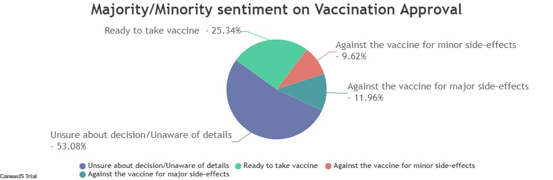

<!DOCTYPE HTML>
<html>
<head>
<script>
window.onload = function () {

var dps = [];
var chart = new CanvasJS.Chart("chartContainer", {
	exportEnabled: true,
	title :{
		text: "Prediction for change based on behavior"
	},
	data: [{
		type: "spline",
		markerSize: 0,
		dataPoints: dps 
	}]
});

var xVal = 0;
var yVal = 100;
var updateInterval = 1000;
var dataLength = 50; // number of dataPoints visible at any point

var updateChart = function (count) {
	count = count || 1;
	// count is number of times loop runs to generate random dataPoints.
	for (var j = 0; j < count; j++) {	
		yVal = yVal + Math.round(7 + Math.random() *(-5-6));
		dps.push({
			x: xVal,
			y: yVal
		});
		xVal++;
	}
	if (dps.length > dataLength) {
		dps.shift();
	}
	chart.render();
};

updateChart(dataLength); 
setInterval(function(){ updateChart() }, updateInterval); 

}
</script>
</head>
<body>
<div id="chartContainer" style="height: 450px; width: 100%;"></div>
<script src="https://canvasjs.com/assets/script/canvasjs.min.js"></script> 
</body>
    <p></p>
    <p></p>
    <head>
    
    </head>
    </html>
</html>